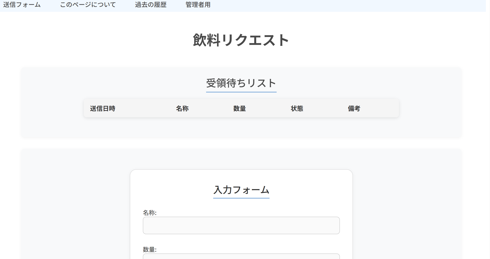

概要
飲料の要望収集のためのwebページです。研究室の"お茶サブスクリプション"加入者が自由なタイミングで気軽に要望を残せるように作成しました。透明性の高さを念頭に設計されたため、リクエストや担当者による回答は全て可視化され、「受領待ち」「購入済み」「却下」など現在の状況をすぐに確認できます。
Googleフォームなど既存のアンケートフォームでは、多くの対象者からの情報を集積するために提供されており、第三者からの秘匿性を保つデザインが多く見られます。 研究室内のような狭いコミュニティでは、ユーザーは回答が送られたかどうかを確認することしかできないほか、管理者はその回答に直接的に紐づけた対応処理ができず、進行状況が見えづらく追跡性が悪いことが欠点になります。
このフォームでは、ユーザーは要望を簡単に匿名で送信でき、他の加入者の要望、受領(購入)状況、過去の要望を全て確認することができます。また、サブスクリプション担当者はメールアドレスとパスワードで管理され、リクエストへの直接的な対応処理、(回答者からの要望による削除などを含めた)履歴の修正など能動的に情報を管理・操作することができます。
主な機能
- 📝 リクエストの送信
- 📱 受領、購入待ちのリクエストの確認
- 💾 履歴の確認
- ⚙️ 担当者による各種情報の管理
技術スタック
- FrontEnd : React, JSX, CSS
- BackEnd : Flask, Python, MySQL
使用方法
- トップページに現在のリクエスト状況が記録されています。
- 要望を出す際は、フォームにリクエストを入力して送信します。
- "過去の履歴"タブより、過去のリクエスト状況を参照できます。
- "管理者画面"タブよりログイン後、リクエストへの回答や履歴の編集、管理者情報の編集ができます。
イメージ
入力フォームと受領待ちのリスト

管理用画面
各要素の編集が可能
リンク
https://web-form-ivory.vercel.app/
今後の予定
- ✅ 時間や内容によるフィルタ・検索機能の追加
- 📩 新規リクエスト受付時の担当者への通知、リクエスト状況更新時の希望者へのメール通知機能の追加